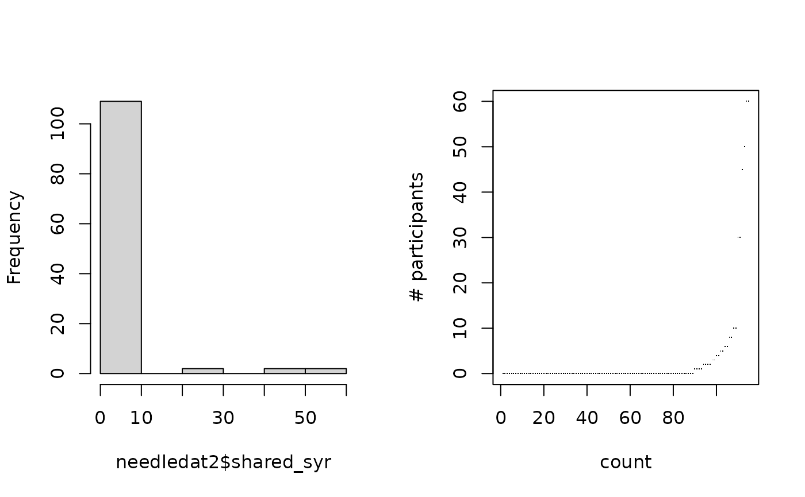
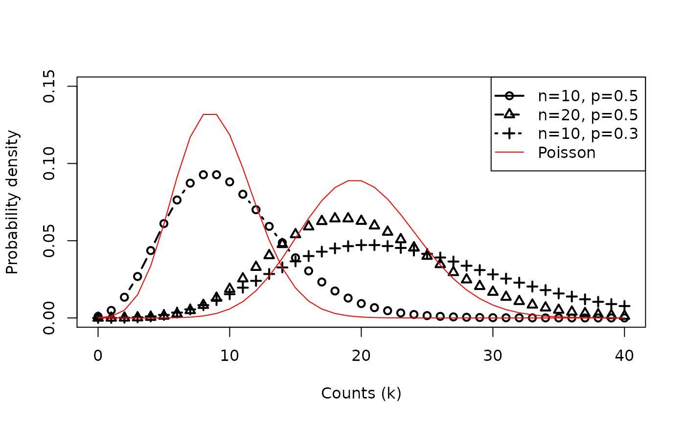

vignettes/session_lecture.Rmd
session_lecture.RmdThe systematic part of the GLM is: \[ log(\lambda_i) = \beta_0 + \beta_1 \textrm{RACE}_i + \beta_2 \textrm{TRT}_i + \beta_3 \textrm{ALCH}_i + \beta_4 \textrm{DRUG}_i \] Or alternatively: \[ \lambda_i = exp \left( \beta_0 + \beta_1 \textrm{RACE}_i + \beta_2 \textrm{TRT}_i + \beta_3 \textrm{ALCH}_i + \beta_4 \textrm{DRUG}_i \right) \]
The random part is (Recall the \(\lambda_i\) is both the mean and variance of a Poisson distribution): \[ y_i \sim Poisson(\lambda_i) \]
shared_syr)sex, ethn,
homeless
sex “M” or “F”, ethn “White”,
“AA”, “Hispanic”
summary(needledat2$shared_syr)## Min. 1st Qu. Median Mean 3rd Qu. Max. NA's
## 0.000 0.000 0.000 3.122 0.000 60.000 2
var(needledat2$shared_syr, na.rm = TRUE)## [1] 113.371Exploratory plots

One way to parametrize a NB model is with a systematic part equivalent to the Poisson model: \[ log(\lambda_i) = \beta_0 + \beta_1 \textrm{RACE}_i + \beta_2 \textrm{TRT}_i + \beta_3 \textrm{ALCH}_i + \beta_4 \textrm{DRUG}_i \] Or: \[ \lambda_i = exp \left( \beta_0 + \beta_1 \textrm{RACE}_i + \beta_2 \textrm{TRT}_i + \beta_3 \textrm{ALCH}_i + \beta_4 \textrm{DRUG}_i \right) \]
And a random part: \[ y_i \sim NB(\lambda_i, \theta) \]
MASS::glm.nb() uses this parametrization,
dnbinom() does notNegative Binomial Distribution has two parameters: # of trials n, and probability of success p

summary(fit.negbin)##
## Call:
## MASS::glm.nb(formula = shared_syr ~ sex + ethn + homeless, data = needledat2,
## init.theta = 0.07743871374, link = log)
##
## Coefficients:
## Estimate Std. Error z value Pr(>|z|)
## (Intercept) 0.4641 0.8559 0.542 0.5876
## sexM -1.0148 0.8294 -1.224 0.2211
## ethnHispanic 1.3424 1.3201 1.017 0.3092
## ethnWhite 0.2429 0.7765 0.313 0.7544
## homelessyes 1.6445 0.7073 2.325 0.0201 *
## ---
## Signif. codes: 0 '***' 0.001 '**' 0.01 '*' 0.05 '.' 0.1 ' ' 1
##
## (Dispersion parameter for Negative Binomial(0.0774) family taken to be 1)
##
## Null deviance: 62.365 on 114 degrees of freedom
## Residual deviance: 56.232 on 110 degrees of freedom
## (2 observations deleted due to missingness)
## AIC: 306.26
##
## Number of Fisher Scoring iterations: 1
##
##
## Theta: 0.0774
## Std. Err.: 0.0184
##
## 2 x log-likelihood: -294.2550Basis: Under \(H_0\): no improvement in fit by more complex model, difference in model residual deviances is \(\chi^2\)-distributed.
Deviance: \(\Delta (\textrm{D}) = -2 * \Delta (\textrm{log likelihood})\)
(ll.negbin <- logLik(fit.negbin))## 'log Lik.' -147.1277 (df=6)
(ll.pois <- logLik(fit.pois))## 'log Lik.' -730.0133 (df=5)
pchisq(2 * (ll.negbin - ll.pois), df=1,
lower.tail=FALSE)## 'log Lik.' 1.675949e-255 (df=6)Step 1: logistic model to determine whether count is zero or Poisson/NB
Step 2: Poisson or NB regression distribution for \(y_i\) not set to zero by 1.
summary(fit.ZIpois)##
## Call:
## pscl::zeroinfl(formula = shared_syr ~ sex + ethn + homeless, data = needledat2,
## dist = "poisson")
##
## Pearson residuals:
## Min 1Q Median 3Q Max
## -1.0761 -0.5784 -0.4030 -0.3341 10.6835
##
## Count model coefficients (poisson with log link):
## Estimate Std. Error z value Pr(>|z|)
## (Intercept) 3.2168 0.1796 17.908 < 2e-16 ***
## sexM -1.4725 0.1442 -10.212 < 2e-16 ***
## ethnHispanic -0.1524 0.1576 -0.968 0.333244
## ethnWhite -0.5236 0.1464 -3.577 0.000348 ***
## homelessyes 1.2034 0.1455 8.268 < 2e-16 ***
##
## Zero-inflation model coefficients (binomial with logit link):
## Estimate Std. Error z value Pr(>|z|)
## (Intercept) 2.06263 0.65227 3.162 0.00157 **
## sexM -0.05068 0.58252 -0.087 0.93068
## ethnHispanic -1.76122 0.81177 -2.170 0.03004 *
## ethnWhite -0.50187 0.56919 -0.882 0.37792
## homelessyes -0.53013 0.48108 -1.102 0.27047
## ---
## Signif. codes: 0 '***' 0.001 '**' 0.01 '*' 0.05 '.' 0.1 ' ' 1
##
## Number of iterations in BFGS optimization: 12
## Log-likelihood: -299.8 on 10 Df
fit.ZInegbin <-
pscl::zeroinfl(shared_syr~sex+ethn+homeless,
dist = "negbin",
data = needledat2)zerinfl() function is to
use all variables as predictors in logistic model
summary(fit.ZInegbin)##
## Call:
## pscl::zeroinfl(formula = shared_syr ~ sex + ethn + homeless, data = needledat2,
## dist = "negbin")
##
## Pearson residuals:
## Min 1Q Median 3Q Max
## -0.5402 -0.3255 -0.2714 -0.1926 5.1496
##
## Count model coefficients (negbin with log link):
## Estimate Std. Error z value Pr(>|z|)
## (Intercept) 2.8410 1.1845 2.399 0.01646 *
## sexM -2.2282 0.9351 -2.383 0.01718 *
## ethnHispanic -0.4123 0.9831 -0.419 0.67492
## ethnWhite -0.4299 0.8648 -0.497 0.61908
## homelessyes 1.9460 0.7103 2.740 0.00615 **
## Log(theta) -1.1971 0.5159 -2.320 0.02032 *
##
## Zero-inflation model coefficients (binomial with logit link):
## Estimate Std. Error z value Pr(>|z|)
## (Intercept) 1.6867 0.8465 1.993 0.0463 *
## sexM -0.9920 0.8016 -1.238 0.2159
## ethnHispanic -13.1868 281.9134 -0.047 0.9627
## ethnWhite -0.7455 0.7304 -1.021 0.3074
## homelessyes 0.3554 0.7397 0.480 0.6309
## ---
## Signif. codes: 0 '***' 0.001 '**' 0.01 '*' 0.05 '.' 0.1 ' ' 1
##
## Theta = 0.3021
## Number of iterations in BFGS optimization: 24
## Log-likelihood: -142.8 on 11 Df
fit.ZInb2 <- pscl::zeroinfl(shared_syr ~ sex + ethn +
homeless + hiv | hiv,
dist = "negbin",
data = needledat2)
summary(fit.ZInb2)##
## Call:
## pscl::zeroinfl(formula = shared_syr ~ sex + ethn + homeless + hiv | hiv,
## data = needledat2, dist = "negbin")
##
## Pearson residuals:
## Min 1Q Median 3Q Max
## -0.4299 -0.3646 -0.3559 -0.3299 6.3053
##
## Count model coefficients (negbin with log link):
## Estimate Std. Error z value Pr(>|z|)
## (Intercept) 3.6685 0.9470 3.874 0.000107 ***
## sexM -1.7648 0.6205 -2.844 0.004454 **
## ethnHispanic -1.5807 0.7446 -2.123 0.033769 *
## ethnWhite -1.1267 0.6924 -1.627 0.103687
## homelessyes 1.0313 0.5693 1.812 0.070028 .
## hivpositive -1.0820 1.0167 -1.064 0.287235
## hivyes 2.3724 0.7829 3.030 0.002444 **
## Log(theta) 0.1395 0.4647 0.300 0.764009
##
## Zero-inflation model coefficients (binomial with logit link):
## Estimate Std. Error z value Pr(>|z|)
## (Intercept) 1.2163 0.2851 4.265 2e-05 ***
## hivpositive -0.3493 0.9389 -0.372 0.710
## hivyes -17.9654 3065.6271 -0.006 0.995
## ---
## Signif. codes: 0 '***' 0.001 '**' 0.01 '*' 0.05 '.' 0.1 ' ' 1
##
## Theta = 1.1497
## Number of iterations in BFGS optimization: 12
## Log-likelihood: -122.5 on 11 Df
fit.ZInb3 <-
pscl::zeroinfl(shared_syr~sex+ethn+homeless|1,
dist = "negbin",
data = needledat2)
summary(fit.ZInb3)##
## Call:
## pscl::zeroinfl(formula = shared_syr ~ sex + ethn + homeless | 1, data = needledat2,
## dist = "negbin")
##
## Pearson residuals:
## Min 1Q Median 3Q Max
## -0.3159 -0.3123 -0.3040 -0.2953 5.2940
##
## Count model coefficients (negbin with log link):
## Estimate Std. Error z value Pr(>|z|)
## (Intercept) 2.08542 1.42671 1.462 0.1438
## sexM -1.43809 0.89189 -1.612 0.1069
## ethnHispanic 0.48130 1.16642 0.413 0.6799
## ethnWhite -0.07418 0.81066 -0.092 0.9271
## homelessyes 1.62076 0.67706 2.394 0.0167 *
## Log(theta) -1.12538 0.89372 -1.259 0.2080
##
## Zero-inflation model coefficients (binomial with logit link):
## Estimate Std. Error z value Pr(>|z|)
## (Intercept) 0.5211 0.7600 0.686 0.493
## ---
## Signif. codes: 0 '***' 0.001 '**' 0.01 '*' 0.05 '.' 0.1 ' ' 1
##
## Theta = 0.3245
## Number of iterations in BFGS optimization: 13
## Log-likelihood: -146.8 on 7 DfUse the confint() function for all these models (don’t
try to specify which package confint comes from). E.g.:
confint(fit.ZInb3)## 2.5 % 97.5 %
## count_(Intercept) -0.7108906 4.8817285
## count_sexM -3.1861592 0.3099794
## count_ethnHispanic -1.8048349 2.7674386
## count_ethnWhite -1.6630517 1.5146931
## count_homelessyes 0.2937565 2.9477701
## zero_(Intercept) -0.9685313 2.0106906